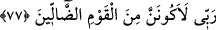

(a.s.) ne yaptı?”diye sorulmakta cevaben de mücadele ettiği kimselerin dediğine uygun
olarak: “Rabb’im budur.” dedi.” diye cevap verilmektedir.
İbrahim (a.s.)’ın babası ve kavmi putlara ve yıldızlara tapıyorlardı. Bir sözün, bir
düşüncenin fasid olduğuna delil getiren kimse, önce onu hasmının görüşü üzere hikaye
ettikten sonra, onun bâtıl olduğunu ortaya koyar.
“Yıldız batınca “Batanları sevmem” bir yerden diğerine gidip mekân değiştiren,
halden hale bürünen ve bazı nesnelerle önü perdeleneni sevmem. Çünkü böyleleri asla
rubûbiyet (rablık) sıfatına müstehak olamazlar, “dedi.”
77. Ay’ı doğarken görünce, Rabbim budur, dedi. O da batınca, Rabbim bana doğru
yolu göstermezse elbette yoldan sapan topluluklardan olurum, dedi.
Yıldızın batmasıyle ortaya çıkan “Ay’ı doğarken görünce” doğmaya başladığını
gördüğünde “Rabb’im budur” dedi.
Ancak, “o da batınca” yıldızın battığı gibi “Rabb’im bana” kendisine varan “doğru
yolu göstermezse elbette yoldan sapan topluluklardan olurum.” dedi. İbrahim (a.s.)
böylece ta’riz yoluyla kavminin sapıklık içinde olduklarını bildirmiştir.
Belki de İbrahim (a.s.) o zaman öyle bir yerdeydi ki batısında yüksek bir dağ
bulunuyordu. Ay ve yıldızlar öğle vaktinde veya biraz sonra o dağın arkasında
kayboluyordu. Yıldız da ona yakındı. Doğu ufku ise açıktı. Aksi takdirde yıldızların
batışından sonra Ay’ın doğması ve Güneş doğmadan önce batması neredeyse tasavvur
edilemez bir husustur.
78. Güneşi doğarken görünce de, Rabbim budur, zîrâ bu daha büyük dedi. O da
batınca, dedi ki: Ey kavmim! Ben sizin (Allah’a) ortak koştuğunuz şeylerden
uzağım.
“Güneşi doğarken”, yani doğmaya başladığı anda “görünce “Rabb’im budur”
görünen cisim benim Rabbim, “bu” yıldızlardan ve Ay’dan “daha büyük.” dedi.” Bu
ifade de tıpkı; önceki âyetteki “Rabb’im bana doğru yolu göstermezse, elbette yoldan
sapan toplulukdan olurum.” ifadesi gibi Hz. İbrahim’in hakkın ortaya çıkmasını arzu
ettiğini teyid etmektedir.